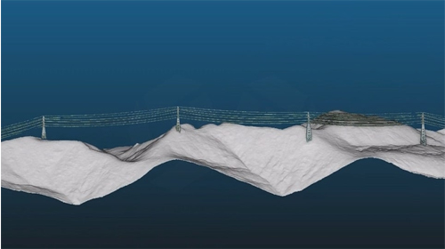

D2N Articles
D2N의 소식, 기술 트렌드, 프로젝트 인사이트를 만나보세요.
지형·지물 분석을 위한 핵심 데이터:
DSM, DEM, nDSM, DOM
라이다(LiDAR)와 항공사진으로 보는 3D 세상: DSM, DEM, nDSM, DOM 이란?
Read More[드론라이다 정밀도] 관측 고도 및 속도에 따른 라이다(LiDAR) 데이터 영향
드론 라이다 데이터 정밀도는 비행 고도와 속도에 크게 좌우되며 최적의 조건을 설정해야 고품질 데이터를 확보
Read More[전력선·거리측정] 드론 라이다를 이용한 안전한 전력선 관리 및 위험요소 예방
드론 라이다를 활용해 전력선 주변의 장애물과 위험 요소를 정밀 측정하여 안전한 전력선 관리와 사고 예방을 지원
Read More

[해안‧지질] 해안 생태계 관측을 위한 새로운 시각 : 드론 라이다를 통한 해안관측
드론 라이다를 활용해 해안선과 지형 변화를 정밀 관측하고, 해안 생태계 보전과 지질 분석에 새로운 시각을 제공
Read More[네트워크 분석] 도시 교통 계획과 인프라 효율성 향상을 위한 OD 행렬 분석
OD(출발-도착) 행렬 기반 네트워크 분석을 통해 도시 교통 체계 개선과 인프라 활용 효율성을 높이는 방안
Read More[DB 위치생성] 지오코딩·지오태깅·지오매핑:
위치 생성과 지리정보 시각화
지오코딩, 태깅, 매핑 기술을 활용해 디지털 정보에 위치를 부여하고 지리정보를 시각화하여 현실 세계와 연결
Read More[분포·밀도] 공간 클러스터 통계 분석을 위한 GIS 셀 격자 활용
GIS 셀 격자 분석을 통해 지리공간 데이터를 분포·밀도 단위로 해석하여 효과적인 공간 클러스터 분석에 활용
Read More[드론라이다 문화재] 드론 라이다(LiDAR)로 탐험하는 문화유산
드론 라이다 기술을 활용해 접근이 어려운 문화유산을 정밀하게 탐사하고 보존 작업의 효율성과 정확성 확보
Read More